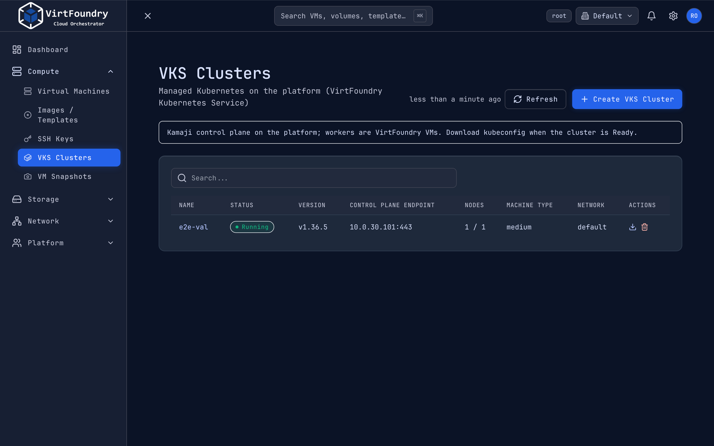

Kubernetes clusters (VKS)¶
VirtFoundry Kubernetes Service (VKS) gives a tenant a managed Kubernetes cluster, EKS-style. The control plane runs on the platform (Kamaji); workers are regular VirtFoundry VMs. The tenant gets a kubeconfig.
Separate chart
VKS ships as its own chart, virtfoundry-vks, from the virtfoundry/vks repository. Install order: operator, then core, then VKS (Versioning).
How it works¶
flowchart LR
T[Tenant] -->|REST / gRPC / Terraform| C[core API]
C -->|writes| K[VKSCluster CR]
K --> V[vks operator]
V -->|creates| P[Kamaji TenantControlPlane]
V -->|creates| I[worker Instances]
I --> O[IaaS operator] --> VM[KubeVirt VMs]
V -->|writes| S[kubeconfig Secret]| Piece | Role |
|---|---|
VKSCluster |
Tenant-facing resource (virtfoundry.io/v1alpha1) |
| vks operator | Creates the Kamaji control plane, the worker Instances and the kubeconfig Secret |
| IaaS operator | Turns each worker Instance into a KubeVirt VM |
| Kamaji | Hosts the Kubernetes API server and etcd for the tenant cluster |


Create a cluster¶
apiVersion: virtfoundry.io/v1alpha1
kind: VKSCluster
metadata:
name: demo
namespace: virtfoundry-tenant-default
spec:
kubernetesVersion: v1.36.5 # must match a published node image
workers:
count: 1
templateRef: { name: ubuntu-node-1-36-5 }
offeringRef: { name: medium }
networkRef: { name: default }
kubectl apply -f vkscluster.yaml
kubectl get vksc -A
The Kubernetes version must match the node image template (ubuntu-node-1-36-5 pairs with v1.36.5).
Node image¶
The worker image is not embedded in the platform. Core seeds a VM template (ubuntu-node-1-36-5) at startup. It points to a digest-pinned containerDisk, ghcr.io/virtfoundry/node-ubuntu, built by vks-image-factory (Ubuntu LTS, containerd, kubelet and kubeadm). KubeVirt pulls it on first use, so nodes need access to ghcr.io, or a mirror that your container-image allowlist covers.
Control plane address¶
spec.controlPlane |
Default | Description |
|---|---|---|
serviceType |
LoadBalancer |
LoadBalancer, NodePort or ClusterIP |
port |
443 |
API server port |
addressPool |
unset | Pin a MetalLB pool for this cluster. Overrides the controller --load-balancer-address-pool flag |
address |
unset | Advertised address (used with NodePort) |
With the defaults, the VIP comes from the cluster load balancer (MetalLB autoAssign) and no pool is pinned. Pin a pool only when you need a specific range. NodePort is a lab escape hatch.
Kubeconfig and API¶
- Permissions:
vks:read,vks:write,vks:kubeconfig. - API: gRPC
virtfoundry.vks.v1alpha1.ClusterServiceon the same port as REST. REST/api/v1/vks/clustersis a thin shim for the console. - Terraform:
virtfoundry_vks_clusterandvirtfoundry_vks_kubeconfig.
Kubeconfig is a credential
The admin kubeconfig grants full access to the tenant cluster. Treat it like a password.
Limits (current)¶
No in-place update: changing a cluster argument replaces it. Not included yet: Kubernetes upgrades, add-ons (load balancer, CSI) and multi-zone.